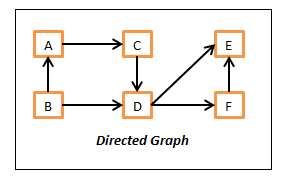
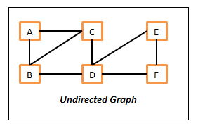
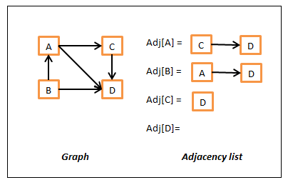
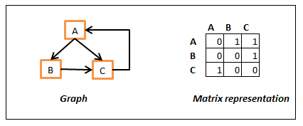

Os grafos são estruturas muito usadas na Matemática e na Informática dado a sua grande expressividade para modelar diferentes problemas.Como consequência dessa expressividade, existem muitos algoritmos que respondem a problemas diferentes. Não é de admirar, por isso, que tenham uma presença muito marcada nos concursos de programação.
Definição (informal): um grafo é uma estrutura constituída por vértices (também designados por nós) e por arestas (ou arcos) que ligam pares de vértices. Em inglês são designados respectivamente por vertices and edges.
Uma forma de classificar grafos é se as arestas possuem direcção. Se sim, são grafos orientados (directed graphs). Caso contrário são grafos não orientados (undirected graphs).
|  |  |
Dentro dos grafos orientados, se não existir um caminho entre vértices que dê uma volta completa, falamos de um grafo orientado acíclico (em inglês, directed acyclic graph, DAG). O exemplo acima não é um DAG dado que existe o caminho ACDBA que produz um ciclo.
As árvores podem ser vistas como grafos orientados especiais, onde cada par de vértices possui apenas um caminho possível.
Os grafos podem ter cada aresta associada a um número a que se chama peso (em inglês, weight).
Mais informações aqui.
As duas formas mais comuns de representar um grafo são por listas de adjacências e por matriz de adjacências.
Na lista de adjacências os vértices são representados num vector de listas. Cada índice do vector, ou seja, cada vértice possui uma lista com referências para os seus vizinhos. Por exemplo:

Uma alternativa é usar uma hash table para armazenar as repectivas listas, usando o nome do vértice como chave.
Esta representação é útil quando lidamos com grafos esparsos, i.e., grafos com muitos nós mas poucas ligações, dado que a memória gasta é proporcional ao número de arestas existentes.
Na matriz de adjacências as ligações são representadas por uma matriz que em cada posição (i, j) representa uma aresta do vértice i para o vértice j do grafo por um número diferente de zero. Aqui vamos definir que se dois nós não estão ligados por uma aresta, o seu valor na matriz é zero.

Esta representação gasta mais memória independentemente do número de arestas. Se o grafo tem n nós, a matriz necessita de n2 posições. Por outro lado, hanvedo espaço disponível para usar esta representação, o acesso à aresta é bastante mais rápido nesta representação.
Em Java é possível criar grafos com milhares de nós. O servidor do UVa disponibiliza memória para grafos entre 5000 e 10000 nós, o que nos garante que a maior parte dos problemas pode ser abordado desta forma.
A classe que iremos usar permite usar duas representações diferentes, a matriz de adjacências e a lista de adjacências para matrizes esparsas. Ela está preparada também para representar grafos orientados e não orientados.
O seu início é o seguinte:
class Graph {
public static final boolean DIRECT = true,
UNDIRECT = !DIRECT;
public static final boolean SPARSE = true,
NOTSPARSE = !SPARSE;
private boolean isSparse; // is the graph using a sparse representation?
private boolean isDirected; // is the graph directed?
private int size; // number of nodes
// Non-sparse representation:
// A 2D array where rows and columns represent the nodes and
// each position represents the weight between nodes (zero means no connection)
// The graph will consist of V nodes and E edges (E <= V^2)
private int[][] graphMatrix;
// Sparse representation
// An array of hashmaps to represent sparse graphs
// The edge (i,j,w) will be added as graphList[i].put(j,w)
private ArrayList<HashMap<Integer,Integer>> graphList;
/////////////////////////// BASIC METHODS ////////////////////////////////////
// by default we use a matrix to represent a graph, ie, a non-sparse representation
public Graph(int nodes, boolean graphType) {
size = nodes;
isDirected = graphType;
isSparse = false;
graphMatrix = new int[size][size];
}
public Graph(int nodes, boolean graphType, boolean sparse) {
size = nodes;
isDirected = graphType;
isSparse = sparse;
if (isSparse) {
graphList = new ArrayList<HashMap<Integer,Integer>>(size);
for (int i=0; i<size; i++)
graphList.add(i,new HashMap<Integer,Integer>());
} else
graphMatrix = new int[size][size];
}
Considerando a representação construímos os métodos básicos de inserção, remoção e consulta de arestas:
/**
* Add edge to graph
*/
public void add(int from, int to, int weight) {
if (isSparse) {
graphList.get(from).put(to, weight);
if (isDirected == UNDIRECT)
graphList.get(to).put(from, weight);
} else {
graphMatrix[from][to] = weight;
if (isDirected == UNDIRECT)
graphMatrix[to][from] = weight;
}
}
public void add(int from, int to) { add(from, to, 1); }
/**
* Remove edge to graph
*/
public void remove(int from, int to) {
if (isSparse) {
graphList.get(from).remove(to);
if (isDirected == UNDIRECT)
graphList.get(to).remove(from);
} else
add(from, to, 0); // remove edge
}
public int weight(int from, int to) {
if (isSparse) {
Integer w = graphList.get(from).get(to);
return w==null ? 0 : w;
} else
return graphMatrix[from][to];
}
public int size() {
return size;
}
/**
* Remove all in-edges and out-edges from/into node
*/
public void isolate(int node) {
if (isSparse) {
graphList.set(node, new HashMap<Integer,Integer>()); // remove out-edges
for (int i=0; i<size; i++)
graphList.get(i).remove(node); // remove in-edges (slow)
} else {
if (isDirected==DIRECT)
graphMatrix[node] = new int[size];
for(int i=0;i<size;i++)
remove(i, node);
}
}
Podemos igualmente construir outros métodos auxiliares que serão úteis em futuros algoritmos. Leiam os javadocs e o código.
/**
* @param node The node which successors we need
* @requires a directed graph
* @return an array with the indexes of the node's successors
*/
public int[] sucessors(int node) {
ArrayList<Integer> l = new ArrayList<Integer>();
if (isSparse) {
for (Integer successor : graphList.get(node).keySet())
l.add(successor);
} else {
for(int i=0; i<size; i++)
if (weight(node,i) != 0)
l.add(i);
}
return list2array(l);
}
/**
* @param node The node which predecessors we need
* @requires a directed graph
* @return an array with the indexes of the node's predecessors
*/
public int[] predecessors(int node) {
ArrayList<Integer> l = new ArrayList<Integer>();
if (isSparse) {
for (int i=0; i<size; i++) { // slow
Integer weight = graphList.get(i).get(node);
if (weight != null)
l.add(i);
}
} else {
for(int i=0; i<size; i++)
if (weight(i,node) != 0)
l.add(i);
}
return list2array(l);
}
/**
* Make a copy of this
* @return the reference to the copy
*/
@SuppressWarnings("unchecked")
public Graph copy() {
Graph cp = new Graph(this.size, this.isDirected, this.isSparse);
if (isSparse) {
for(int i=0;i<cp.size;i++)
cp.graphList.set(i,
(HashMap<Integer,Integer>)this.graphList.get(i).clone());
} else {
for(int i=0;i<cp.size;i++)
cp.graphMatrix[i] = this.graphMatrix[i].clone();
}
return cp;
}
public String toString() {
StringBuffer sb = new StringBuffer();
if (isSparse) {
for(int i=0; i<size; i++)
for (Integer j : graphList.get(i).keySet()) {
int weight = graphList.get(i).get(j);
if (weight!=0)
if (weight==1)
sb.append(i+"->"+j+" "); // don't show weights 1
else
sb.append(i+"-{"+weight+"}->"+j+" ");
}
} else {
for(int i=0; i<size; i++)
for(int j=0; j<size; j++)
if (weight(i,j)!=0)
if (weight(i,j)==1)
sb.append(i+"->"+j+" "); // don't show weights 1
else
sb.append(i+"-{"+weight(i,j)+"}->"+j+" ");
}
return sb.toString();
}
private int[] list2array(ArrayList<Integer> list) {
int[] array = new int[list.size()];
int index=0;
for(int elem : list)
array[index++] = elem;
return array;
}
Será a partir desta estrutura que iremos incluir algoritmos sobre grafos e que nos ajudarão a resolver diversos tipos de problemas.